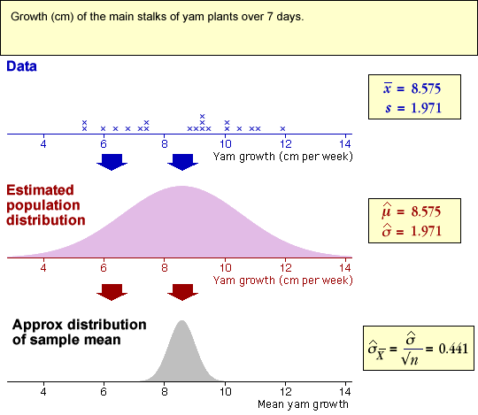

| = μ |
Need for multiple values to assess variability
We usually need to make two or more measurements of a variable to get any information about its variability. A single value contains no information about the quantity's variability.
Achieving the impossible?
Fortunately, we do not need multiple sample means to assess the variability of a sample mean. Its distribution can be estimated from a single sample using
| = μ |
| = |
The distribution of the mean can be approximated with a normal distribution with this mean and standard deviation, if we replace µ
and σ with  and s.
and s.
